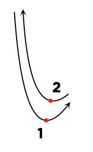

Phase B: hand-tracking position test (fingers-together centroid, not index-point)
BPM
Signature
2/4
3/4
4/4
Seconds
Scale (px/unit)
Calibrate & Start
Idle. Click "Calibrate & Start", allow camera access, then hold your hand with fingers together (like pinching a baton) at the TOP/prep position when asked.
